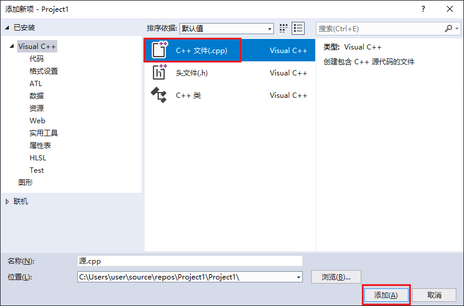

在 Visual Studio 中配置 PM1 SDK¶
创建一个 C++ 空项目（以 VS2017 为例）
打开 VS，依次点击菜单“文件”->“新建”->“项目”，弹出新建项目窗口。在新建项目窗口中选择 “Visual C++” -> “其他” -> “空项目” 创建项目，如下图所示。
注意：如果找不到此项目类型，请检查 VS 中是否已经安装 C++。


下载 SDK 文件
访问 PM1 SDK 的 GitHub 发布页，下载最新版本的头文件（pm1_sdk.h）与静态库文件（pm1_sdk.lib、pm1_sdk_debug.lib），并将文件放置到项目路径下，按照上一步的项目名称位置，文件路径为
C:\Users\user\source\repos\Project1\Project1，如下图所示。
添加测试代码并运行
在解决方案资源管理器项目“源文件”项上右键“添加”->“新建项”，然后在弹出的添加新项窗口中选择 C++ 文件，添加一个源文件，如下图所示。


然后在
源.cpp中添加如下代码#include <iostream> #include "pm1_sdk.h" // 头文件 using namespace autolabor::pm1; // 命名空间 #ifdef _DEBUG // 静态库 #pragma comment(lib, "pm1_sdk_debug.lib") #else #pragma comment(lib, "pm1_sdk.lib") #endif int main() { std::cout << "initializing..." << std::endl; auto result = initialize(); // 初始化连接 if (result) { std::cout << "connected to " << result.value << std::endl; unlock(); // 解锁 std::cout << "moving..." << std::endl; turn_around(0.25, 1.57); // 以0.25rad/s的速度原地转90° shutdown(); // 断开连接 } else { std::cerr << result.error_info << std::endl; } system("pause"); return 0; }
然后连接PM1点击运行测试代码